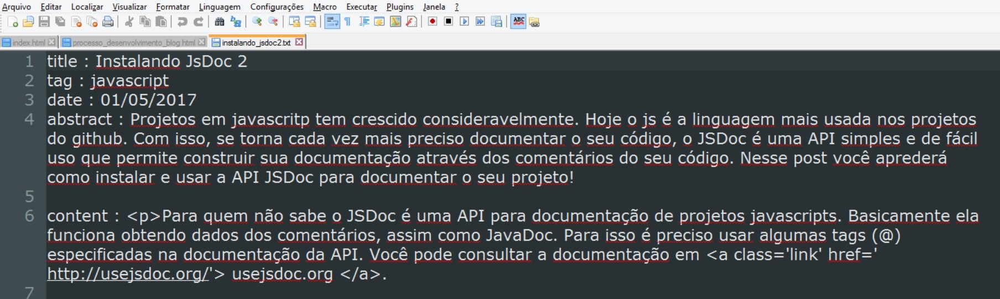
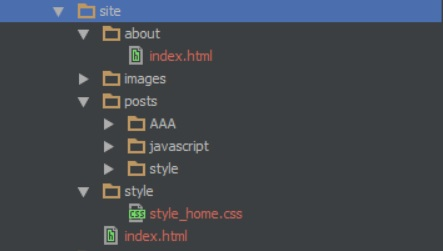
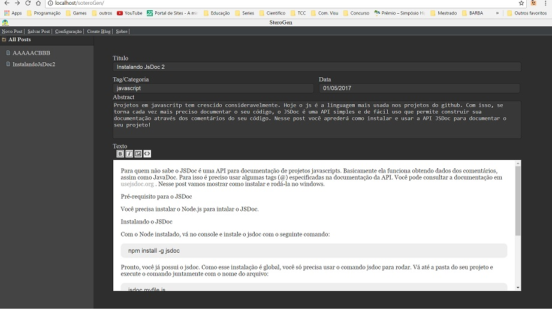

Olá pessoal, esse post é para falar um pouco mais sobre a nossa aplicação de site estático. Há algum tempo usei uma ferramenta de geração de sites - a jekyll - que não gostei pelos seguintes motivos:
#1 - Pelo processo de geração do blog (via console);
#2 - Por não possuir uma interface que me facilitasse a escrita das postagens.
Passado alguns meses, resolvi resgatar a ideia do blog. Criei a minha estrutura, meus primeiros posts, o estilo (com css) e por ai vai - é justamente esse templete aqui que você está lendo. Tinha então um blog estático, mas ainda assim era preciso:
#1 - Criar paginas de posts a cada novo post;
# 2- Adicionar o link a lista de posts da sua respectiva caterogia;
#3 - Colocar o link com data, título e resumo na homepage.
Pois é! Vários problemas que - por fim - continuavam a comer o meu time (que já é escasso) e que agregam grande probabilidade de erro, pois posso esquecer de algum arquivo ou até linkar de maneira errada.
Resolvi, então, criar um gerador via PHP que eu pudesse rodar facilmente no meu servidor local para que ele pudesse gerar as páginas, obtendo dados de arquivos textos. Além disso, idealizei criar uma interface para fazer as postagens e controlar a plataforma (que lindo não?).
Bem, inicialmente o formato de arquivo proposto foi: "campo : conteúdo". Através do PHP eu verifico no diretório, obtenho todos os arquivos .txt e, abrindo um por um, pego os dados do post. Gero as páginas dos posts, da categoria e a home de forma fácil e automatizada.
Após arrumar todo o processo de geração com cada página e pasta criada partir para a inserção dos dados, como já tinha os templetes do blog com o estilo e as tags, só foi preciso inserir códigos do PHP do código html.
Feito isso, o próximo passo foi a criação da interface. Nela usei javascript se comunicando com o PHP via ajax. Obtenho, assim, a lista dos arquivos e os dados de cada um, colocando-os nos inputs para edição. Atualmente já é possível criar um post, salvar, editar e gerar o blog. O conteúdo é editado via html, mas pode ser visto através de preview com iframe!
As projeções futuras são: finalizar a interface, colocando elementos de configuração da plataforma, permitir a inserção de templetes, configuração do local de geração do blog, nome do blog e o processo de inserção de imagem.
Se você chegou até aqui e está interessado nessa coisa ai de gerar site estático, passa no repositório do projeto.